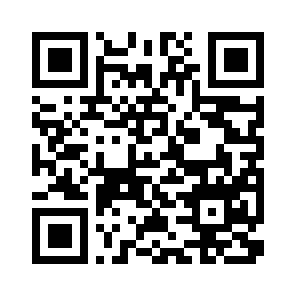

Receiver
Phone controller QR:

WebSocket auto-signaling only. If not connected, nothing will run.
Status: idle
Signaling: not connected
Tilt: waiting…
Live tilt
beta (pitch) maps to Y, gamma (roll) maps to X
Tilt moment (integrated)
Integration of normalized tilt over time